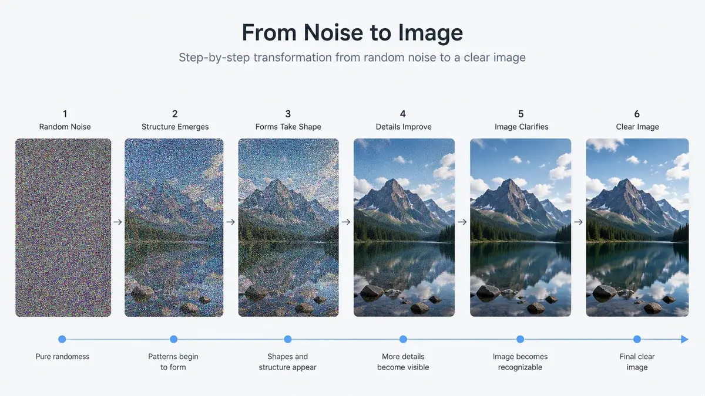

Robot Learning
Diffusion Model
A high level explanation of diffusion models and diffusion policy for robotics.
Diffusion models became especially popular for image and video generation. Many AI products now include image generators that use diffusion-style ideas, but a large language model itself is not the same thing as a diffusion model.
In robotics, Chi et al. introduced diffusion policy by combining diffusion-style generation with robot learning. The idea is simple: instead of creating pictures, these models create actions for robots.
Diffusion Model
To understand diffusion policy, we will touch on the concept of diffusion models for images and video first to build an important foundation.
Imagine some random pixel image. This is exactly what the diffusion model has at the beginning.
Now, say the user asks, "give me a mountain with a beautiful lake picture." The diffusion model would convert this random image into the mountain and lake image that the user desires.

That is already enough for a super high level understanding of the diffusion model. It basically converts a noisy picture into something that the user wants.
How Does It Learn?
Just like a normal machine learning model, it was trained with lots of data. However, unlike a Triceratops vs. T. rex classifier, where you train it with pictures saying which one is which, this model is trained by reversing the process of its own task.
To clarify that, in the training phase, the model is given a picture of, say, a cocker spaniel. Then we add noise to this picture until it becomes close to a random pixel picture, just like the beginning of the generation process. While we add the noise, the model learns to predict the noise that was added. Think of it like the model observing how noise changes the picture.
So now, if the model is asked to generate a cocker spaniel picture from a random pixel picture, it knows how to denoise toward that kind of image. But if it was asked to generate an owl and it had never learned from owl-like examples, the model would have trouble doing that.
That is why we train it with millions of pictures, repeating the same process of adding noise from a good picture to a random noise picture. The model learns this adding-noise process and tries to reverse it. In the end, a good diffusion model should generalize well enough that it can create many different pictures.
Again, the process is: given the user's prompt, the model creates a random noise picture. Then it tries to denoise it according to the user's prompt. That is it.
In Robotics
Now you should have a good understanding of how the diffusion model works. In robotics, it is the same general idea, but instead of images, the model works with actions. The policy starts from completely random actions and gradually denoises them into actions that look like the expert demonstrations it was trained on.
Here is the full example code:
View full diffusion policy example
import numpy as np
import torch
import torch.nn as nn
import torch.optim as optim
import mujoco
import imageio
XML = """
<mujoco>
<option timestep="0.02" gravity="0 0 -9.81"/>
<worldbody>
<light pos="0 0 3"/>
<camera name="cam" pos="1.2 -1.2 0.9" xyaxes="1 1 0 -0.4 0.4 1"/>
<geom name="table" type="box" pos="0 0 0" size="0.6 0.4 0.03" rgba="0.6 0.6 0.6 1"/>
<body name="cube" pos="-0.25 0 0.08">
<joint name="cube_free" type="free"/>
<geom type="box" size="0.04 0.04 0.04" rgba="0.1 0.4 1 1"/>
</body>
<body name="gripper" mocap="true" pos="-0.25 0 0.25">
<geom type="sphere" size="0.035" rgba="1 0.2 0.2 1"/>
</body>
<geom name="target" type="cylinder" pos="0.25 0 0.04" size="0.06 0.005" rgba="0.2 1 0.2 1"/>
</worldbody>
</mujoco>
"""
def expert_action(gripper, cube, target):
above_cube = cube + np.array([0, 0, 0.18])
grasp_pos = cube + np.array([0, 0, 0.06])
above_target = target + np.array([0, 0, 0.18])
place_pos = target + np.array([0, 0, 0.08])
dist_to_cube = np.linalg.norm(gripper[:2] - cube[:2])
holding = np.linalg.norm(gripper - grasp_pos) < 0.06 or cube[2] > 0.12
if not holding:
goal = above_cube if dist_to_cube > 0.03 else grasp_pos
else:
goal = above_target if np.linalg.norm(gripper[:2] - target[:2]) > 0.03 else place_pos
action = goal - gripper
return np.clip(action, -0.03, 0.03)
def get_state(gripper, cube, target):
return np.concatenate([gripper, cube, target]).astype(np.float32)
def set_cube_pos(data, pos):
data.qpos[:3] = pos
data.qpos[3:7] = np.array([1, 0, 0, 0])
HORIZON = 8 # number of future actions predicted at once
STATE_DIM = 9
ACTION_DIM = 3
TIMESTEPS = 20 # diffusion denoising steps
all_states = []
all_action_chunks = []
target = np.array([0.25, 0.0, 0.08])
for episode in range(120):
cube = np.array([
np.random.uniform(-0.35, -0.15),
np.random.uniform(-0.12, 0.12),
0.08
])
gripper = cube + np.array([0, 0, 0.22])
holding = False
states = []
actions = []
for t in range(140):
state = get_state(gripper, cube, target)
action = expert_action(gripper, cube, target)
states.append(state)
actions.append(action.astype(np.float32))
gripper = gripper + action
if np.linalg.norm(gripper - (cube + np.array([0, 0, 0.06]))) < 0.06:
holding = True
if holding:
cube = gripper - np.array([0, 0, 0.06])
if holding and np.linalg.norm(cube[:2] - target[:2]) < 0.04 and cube[2] < 0.12:
holding = False
states = np.array(states)
actions = np.array(actions)
# Turn expert trajectory into training pairs:
# current state -> next H expert actions
for i in range(len(states) - HORIZON):
all_states.append(states[i])
all_action_chunks.append(actions[i:i + HORIZON])
all_states = torch.tensor(np.array(all_states), dtype=torch.float32)
all_action_chunks = torch.tensor(np.array(all_action_chunks), dtype=torch.float32)
print("states:", all_states.shape)
print("action chunks:", all_action_chunks.shape)
class DiffusionPolicy(nn.Module):
def __init__(self):
super().__init__()
# input = noisy action chunk + state + diffusion timestep
input_dim = HORIZON * ACTION_DIM + STATE_DIM + 1
output_dim = HORIZON * ACTION_DIM
self.net = nn.Sequential(
nn.Linear(input_dim, 128),
nn.ReLU(),
nn.Linear(128, 128),
nn.ReLU(),
nn.Linear(128, output_dim)
)
def forward(self, noisy_actions, state, timestep):
batch_size = noisy_actions.shape[0]
noisy_flat = noisy_actions.reshape(batch_size, -1)
timestep = timestep.reshape(batch_size, 1)
x = torch.cat([noisy_flat, state, timestep], dim=1)
predicted_noise = self.net(x)
return predicted_noise.reshape(batch_size, HORIZON, ACTION_DIM)
policy = DiffusionPolicy()
optimizer = optim.Adam(policy.parameters(), lr=1e-3)
loss_fn = nn.MSELoss()
# Simple noise schedule
betas = torch.linspace(1e-4, 0.02, TIMESTEPS)
alphas = 1.0 - betas
alpha_bars = torch.cumprod(alphas, dim=0)
for epoch in range(500):
batch_idx = torch.randint(0, all_states.shape[0], (256,))
state = all_states[batch_idx]
clean_actions = all_action_chunks[batch_idx]
# randomly choose diffusion timestep
t = torch.randint(0, TIMESTEPS, (256,))
alpha_bar = alpha_bars[t].reshape(-1, 1, 1)
# add noise to expert actions
noise = torch.randn_like(clean_actions)
noisy_actions = torch.sqrt(alpha_bar) * clean_actions + torch.sqrt(1 - alpha_bar) * noise
# model learns to predict the noise that was added
t_normalized = t.float() / TIMESTEPS
predicted_noise = policy(noisy_actions, state, t_normalized)
loss = loss_fn(predicted_noise, noise)
optimizer.zero_grad()
loss.backward()
optimizer.step()
if epoch % 100 == 0:
print(f"epoch {epoch}, loss = {loss.item():.5f}")
@torch.no_grad()
def sample_action_chunk(policy, state):
policy.eval()
state = torch.tensor(state, dtype=torch.float32).unsqueeze(0)
# Start from pure random noise
actions = torch.randn(1, HORIZON, ACTION_DIM)
# Gradually denoise
for t in reversed(range(TIMESTEPS)):
t_tensor = torch.tensor([t / TIMESTEPS], dtype=torch.float32)
predicted_noise = policy(actions, state, t_tensor)
alpha = alphas[t]
alpha_bar = alpha_bars[t]
beta = betas[t]
actions = (1 / torch.sqrt(alpha)) * (
actions - ((1 - alpha) / torch.sqrt(1 - alpha_bar)) * predicted_noise
)
if t > 0:
actions = actions + torch.sqrt(beta) * torch.randn_like(actions)
return actions.squeeze(0).numpy()
model = mujoco.MjModel.from_xml_string(XML)
data = mujoco.MjData(model)
renderer = mujoco.Renderer(model, height=480, width=640)
frames = []
cube = np.array([-0.28, 0.08, 0.08])
gripper = cube + np.array([0, 0, 0.22])
holding = False
for t in range(160):
state = get_state(gripper, cube, target)
# Diffusion predicts a chunk of future actions
action_chunk = sample_action_chunk(policy, state)
# Execute only the first action
action = action_chunk[0]
action = np.clip(action, -0.03, 0.03)
gripper = gripper + action
if np.linalg.norm(gripper - (cube + np.array([0, 0, 0.06]))) < 0.06:
holding = True
if holding:
cube = gripper - np.array([0, 0, 0.06])
if holding and np.linalg.norm(cube[:2] - target[:2]) < 0.04 and cube[2] < 0.12:
holding = False
data.mocap_pos[0] = gripper
set_cube_pos(data, cube)
mujoco.mj_forward(model, data)
renderer.update_scene(data, camera="cam")
frames.append(renderer.render())
imageio.mimsave("diffusion_pickplace.mp4", frames, fps=30)
print("Saved diffusion_pickplace.mp4")Notice that the ball looks a little shaky. In this small demo, the policy samples from noise each time it predicts and then executes only the first action from the sampled chunk. A stronger implementation would usually add smoothing or reuse more of the predicted chunk.
This code is really overwhelming, but this is the part to focus on first:
noise = torch.randn_like(clean_actions)
noisy_actions = (
torch.sqrt(alpha_bar) * clean_actions
+ torch.sqrt(1 - alpha_bar) * noise
)This is how we add noise to the action chunk. For image diffusion, the noise is added to pixels. For diffusion policy, the noise is added to actions.
actions = (1 / torch.sqrt(alpha)) * (
actions - ((1 - alpha) / torch.sqrt(1 - alpha_bar)) * predicted_noise
)Then the model denoises the action chunk step by step.
But that does not mean you need to code the whole thing every time you want to use diffusion models. In general, pretrained diffusion models can often be loaded through libraries such as Hugging Face Diffusers. The example below is for image generation, not the exact robotics policy above.
from diffusers import DiffusionPipeline
import torch
# Load the pretrained model
pipe = DiffusionPipeline.from_pretrained(
"CompVis/stable-diffusion-v1-4",
torch_dtype=torch.float16
)
# Move the pipeline to the GPU for significantly faster inference
pipe.to("cuda")
# Generate an image
prompt = "A futuristic city in the style of cyberpunk"
image = pipe(prompt).images[0]
# Save or display the image
image.save("generated_image.png")